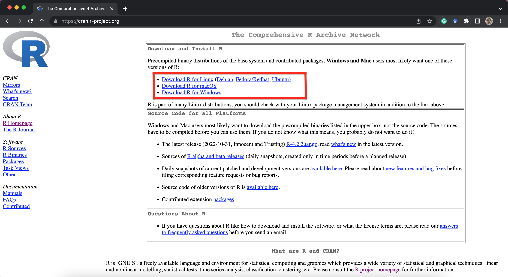
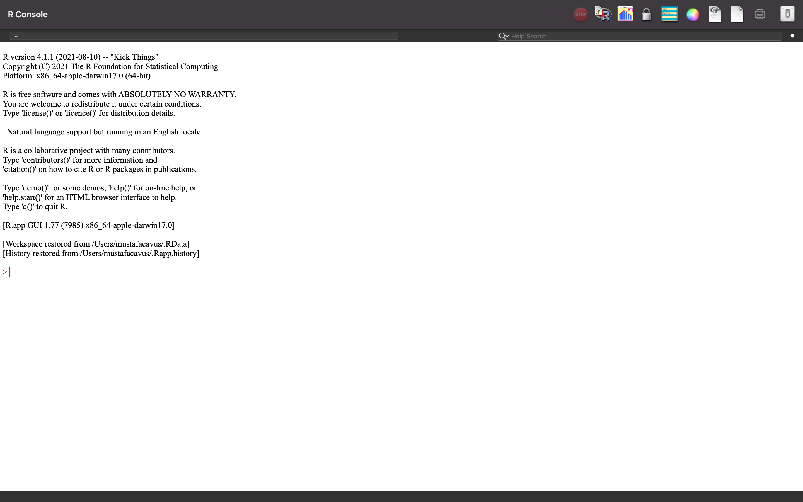
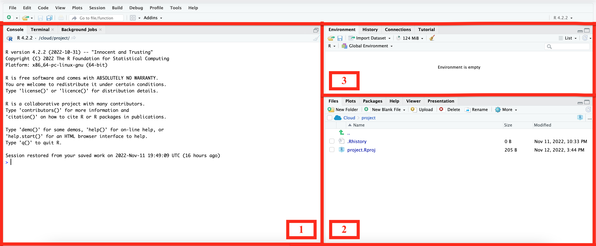
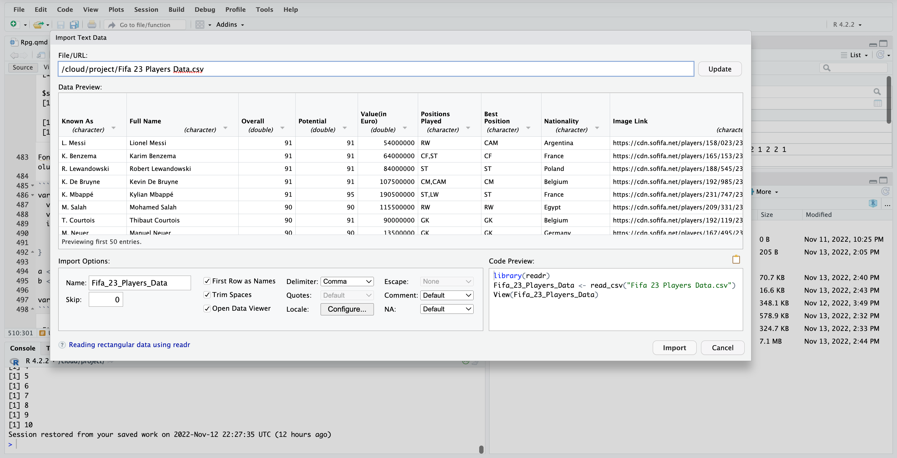
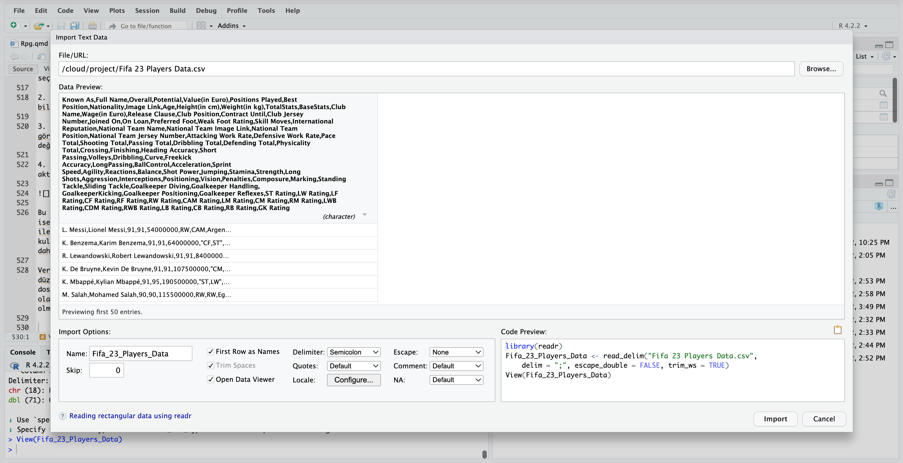
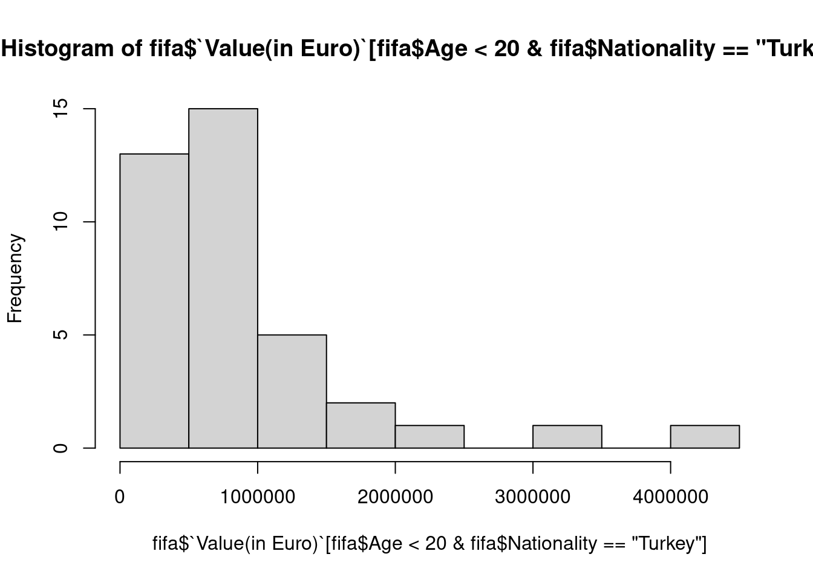
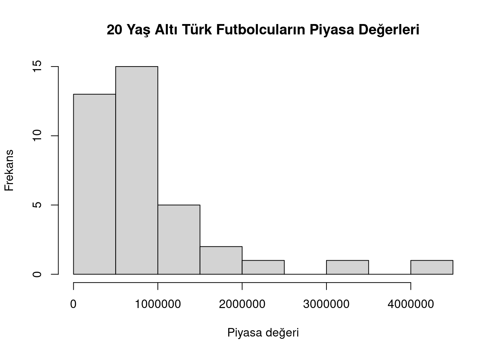

a <- 5
a[1] 5R, bir programlama dilidir.
Açık kaynak kod yapısındadır.
İstatistiksel analiz/modelleme işlemleri için güçlü bir altyapıya sahiptir.
Çeşitli ve yüksek kaliteli görseller sunar.
Güçlü bir komünitesi bulunmaktadır.
ÜCRETSİZ
Mesajları anlamaya çalışmak ya da google’lamak çözüme ulaşmanızı sağlar. Hata yapmadan doğruyu öğrenmek mümkün değil: No error, no gain!
Hedef odaklı öğrenme, sonuca ulaşmayı sağlar. Bir analizi yapmak, bir modeli kurmak ya da bir grafik çizmek için yola çıkabilirsiniz. Her detayı öğrenmek, olası değil.
Bir formal öğrenim (min 2-3 yarıyıl) alma imkanınız yoksa, kendi kendinize öğrenmek için YouTube, GitHub vb. ortamlar çok sayıda kaynak sunuyor. Ayrıca learnR4free üzerinden Türkçe kaynakların derlemesine, ve R for Data Science kitabının Türkçe versiyonuna göz atabilirsiniz.
Öğrenmek için altın kural: Pratik, Pratik ve Pratik.
R kullanabilmek için https://cran.r-project.org/ web sayfasından kullandığınız işletim sisteminize uygun olan kurulum dosyalarını indirmeniz gerekmektedir.

İlgili dosyayı indirip, yükledikten sonra temel R ekranına ulaşabilirsiniz.

Arayüz olarak temel R çok kullanışlı değildir. Bu durum her ne kadar göreceli olsa da, pratikte genellikle daha kullanışlı bir geliştirme ortamına ihtiyaç duyulmaktadır. RStudio, temel R’a göre daha iyi bir arayüz sunduğu için tercih edilir. Web sayfasından indirilip, kurulum gerçekleştirildikten sonra kolaylıkla kullanılabilir.
RStudio, R ile entegre çalışan bir geliştirme ortamıdır. (1) Konsol, (2) Dosya dizini ve (3) Ortam olmak üzere üç temel panelden oluşur. Konsol, kodları çalıştırmak ve çıktıları elde etmek için kullanılır. Dosya dizini panelinde, çalışma ortamında yer alan dosyalara, oluşturulan grafik çıktılarına, yüklü paketlere erişim gibi bir çok işlemi yapabilmek mümkündür. Ortam panelinde oluşturulan nesne ve veriler takip edilebilir, hakkındaki özet bilgiler görüntülenir.

2.panelde yer alan Plots sekmesinde, çizilen grafikler görüntülenip, istenilen ölçü ve dosya türünde dışarıya aktarılabilmektedir. Ayrıca 3.panelde yer alan Import Dataset butonu ile dış kaynaklı veriler bazı ön işlemleri de hızlıca gerçekleştirebilme seçeneğiyle R Studio ortamına aktarılabilir. Bu iki işlem gibi sürekli ihtiyaç duyulan işlemleri temel R ekranında gerçekleştirmek daha zahmetlidir.
Bir nesne oluşturmak ve nesneye atamalar yapma için = ya da <- operatörlerini kullanabiliriz.
a <- 5
a[1] 5a nesnesine birden fazla değer atamak için c() fonksiyonundan yararlanırız. R’da herhangi bir metinsel ifadeden sonra parantez () kullanımı, bu ifadenin bir fonksiyon olduğunun göstergesidir.
a <- c(1, 3, 5)
a[1] 1 3 5Bir nesnenin boyutuna yani içerdiği gözlem değeri sayısını length() fonksinuyla hesaplayabiliriz.
length(a)[1] 3Bir nesnede yer alan bir değeri çağırmak için ilgili değerin sırasını, nesnenin isminden sonra köşeli parantez [] içerisinde belirtmek yeterlidir.
a[2] # a nesnesinde 2.sırada yer alan değerin çağırılması[1] 3Yukarıdaki örnekte gördüğünüz gibi diyez ya da hashtag işareti # kullanıldığı yerde sonrasında yer alan karakterleri pasif hale getirir. Bu özellik kodlara açıklama satırı eklemek için ya da belirli satırları çalıştırmamak için de kullanılabilir.
a <- 5
a <- c(a, 3)
#a <- c(a, 2)
a[1] 5 3R programlama dilinde, nümerik (numeric), tam sayı (integer), karmaşık sayılar (complex), karakter (character) ve mantıksal (logical) olmak üzere 5 temel veri tipi bulunmaktadır.
Herhangi bir ondalık sayı ile ifade edilebilen veri tipidir. Bir insanın yaşı, boy uzunluğu veya kilosu nümerik veri tipine örnektir.
# tek gözlemden oluşan nümerik tipte bir veri
a <- 12.3
a[1] 12.3class(a)[1] "numeric"# birden fazla gözlemden oluşan nümerik tipte bir veri
a <- c(12, 5.4, 6.2, 11.7)
a[1] 12.0 5.4 6.2 11.7Veri tipini kontrol etmek için class() fonksiyonu kullanılır.
Tam sayı değerler alan bir veriye ilişkin değerleri tanımlamak için kullanan veri tipidir. as.integer() fonksiyonu ile oluşturulur.
a <- as.integer(5)
a[1] 5class(a)[1] "integer"a <- as.integer(c(12, 5, 6, 8, 1))
a[1] 12 5 6 8 1class(a)[1] "integer"Herhangi bir metin ile ifade edilen veri tipidir. Cinsiyet, herhangi bir cismin rengi bu tip değişkene örnektir. as.character() fonksiyonuyla ya da çift tırnak içerisinde yazılan ifadeler yardımıyla oluşturulabilir.
a <- "Kadın"
a[1] "Kadın"class(a)[1] "character"a <- as.character(55)
a[1] "55"class(a)[1] "character"Bazı durumlarda nümerik değerler, bir verinin gözlem değerlerini birbirinden ayırt etmek için etiket olarak kullanımı gerekebilir. Bu gibi durumlarda character tipinde veriler oluşturulur.
Bir mantıksal veri tipi TRUE ve FALSE olmak üzere yalnızca iki değer alabilir. Bu tip veri genellikle karşılaştırma yapılmak istendiğinde kullanılır. Örneğin, a nesnesinin aldığı değer b nesnesinin aldığı değerden büyük müdür, gibi sorgulamalarda oldukça kullanışlıdır.
a <- 10
b <- 5
a > b[1] TRUE5 > 10[1] FALSEMantıksal veri tipi, tüm veri yapılarındaki sorgulamalar için oldukça kullanışlıdır. Çıktıları üzerinden sayma işlemleri ve oran hesapları kolaylıkla yapılabilir. Bu özelliğine ilişkin detaylı açıklamaları ilerleyen bölümlerde ele alacağız.
vektör, faktör, matris, liste ve data frame olmak üzere 5 temel veri yapısı bulunmaktadır.
Vektörler, aynı tip verileri saklamak için kullanılırlar.
data <- c(1, 2, 3, 4, 5, 6)
data[1] 1 2 3 4 5 6Atama sırasında farklı veri tipleri kullanılırsa, tüm değerleri aynı veri tipine dönüştürerek saklarlar.
data <- c("a", "b", 1, 2, 3)
data[1] "a" "b" "1" "2" "3"Matris veri yapısı, iki boyutlu vektörlerden oluşan dikdörtgen formundadır. matrix() fonksiyonu ile oluşturulur.
matris <- matrix(c(1, 2, 3, 4, 5, 6), ncol = 2)
matris [,1] [,2]
[1,] 1 4
[2,] 2 5
[3,] 3 6matrix() fonksiyonunu kullanırken iki argümanın girilmesi zorunludur. Bunlar, gözlem değerlerini içeren birinci argüman ve satır (nrow) ya da sütun (ncol) sayısını belirlemeye yarayan argümandır.
Matris veri yapısında herhangi bir gözlem değerini çağırmak için, iki boyutlu yapıda olduğundan ilgili gözlemin satır ve sütun bilgilerinin girilmesi gereklidir.
matris[2, 1] # matrisin 2.satır 1.sütununda yer alan gözlem değeri[1] 2Bir satır ya da bir sütunu çağırmak için diğer boyut bilgisinin boş bırakılması yeterlidir.
matris[1,] # 1.satırdaki gözlem değerleri[1] 1 4matris[,2] # 2.sütundaki gözlem değerleri[1] 4 5 6İstatistiksel literatürde kategorik olarak adlandırılan, sınırlı sayıda kategoriden (düzeyden) oluşan verileri saklamak için kullanılır. Örneğin, cinsiyet, eğitim düzeyi, yaş grubu kategorik tipte verilerdir.
Bu tip verileri factor() fonksiyonunu kullanarak oluşturabiliriz. Burada öncelikle c() fonksiyonu ile bir vektör oluşturmamız gerektiğine dikkat ediniz.
cinsiyet <- factor(c("Kadın", "Erkek", "Kadın", "Kadın", "Erkek"))
cinsiyet[1] Kadın Erkek Kadın Kadın Erkek
Levels: Erkek KadınKategorik verilerden oluşan bir vektörü daha sonra faktör tipine dönüştürmek için as.factor() fonksiyonu kullanılabilir. Aksi taktirde oluşturulan nesnenin character tipte kalacaktır.
cinsiyet <- c("Kadın", "Erkek", "Kadın", "Kadın", "Erkek")
cinsiyet[1] "Kadın" "Erkek" "Kadın" "Kadın" "Erkek"class(cinsiyet)[1] "character"cinsiyet <- as.factor(cinsiyet)
cinsiyet[1] Kadın Erkek Kadın Kadın Erkek
Levels: Erkek Kadınclass(cinsiyet)[1] "factor"Sıralı kategorik veri oluşturmak için factor() fonksiyonu içerisindeki bazı argümanlarını kullanarak düzeyler arasındaki sıralamayı belirtmemiz gerekiyor.
egitim_durumu <- factor(c("Ortaokul" ,"Lise", "Üniversite", "Ortaokul" ,
"Lise", "Ortaokul" ,"Lise", "Üniversite",
"Üniversite"),
order = TRUE,
levels = c("Ortaokul" ,"Lise", "Üniversite"))
egitim_durumu[1] Ortaokul Lise Üniversite Ortaokul Lise Ortaokul Lise
[8] Üniversite Üniversite
Levels: Ortaokul < Lise < ÜniversiteOluşan çıktıda düzeylerin (Levels) arasındaki sıralama ilişkisini görebilirsiniz. Bu sayede, sıralama esnasında yapılan bir hata kolaylıkla tespit edilebilir.
Sıralı (ordinal) ya da sırasız (nominal) kategorik verilerde yer alan gözlem sıklıklarını summary() fonksiyonu ile görebiliriz.
summary(cinsiyet)Erkek Kadın
2 3 summary(egitim_durumu) Ortaokul Lise Üniversite
3 3 3 Data frame’ler birden çok tipte veriyi saklamak için kullanılan veri yapılarıdır. Farklı tipte veri saklayabilme özellikleri ile matris yapısındaki verilerden ayrılırlar. Uygulamada en sık kullanılan veri yapısıdır.
data.frame() fonksiyonu ile oluşturulur. Her bir veriyi alıştığımız şekilde bu fonksiyon içerisinde tanımlayabiliriz. Bu aşamada en sık yapılan hata, veriler arasına virgül koymanın unutulmasıdır.
veri_seti <- data.frame(yas = c(21, 13, 42, 15),
boy = c(180, 142, 167, 159),
cinsiyet = c("Kadın", "Kadın", "Erkek", "Erkek"))
veri_seti yas boy cinsiyet
1 21 180 Kadın
2 13 142 Kadın
3 42 167 Erkek
4 15 159 ErkekData frame yapısındaki verilerin, aynı sayıda satırdan; yani her bir veri için eşit sayıda gözlemden oluşması gerekmektedir.
veri_seti <- data.frame(yas = c(21, 13, 42),
boy = c(180, 142, 167, 159),
cinsiyet = c("Kadın", "Kadın", "Erkek", "Erkek"))Error in data.frame(yas = c(21, 13, 42), boy = c(180, 142, 167, 159), : arguments imply differing number of rows: 3, 4Çok sayıda satır (gözlem değeri) içeren bu yapıdaki verilerin yalnızca ilk satırlarını ekrana yazdırmak için head() fonksiyonu kullanılır. Bu fonksiyon, veriye hızlı bir bakış atmak ya da dış kaynaklı bir verinin doğru şekilde ortama aktarıldığından emin olmak olmak için kullanılabilir. Opsiyonel argümanıyla görülmek istenen satır sayısı değiştirilebilir.
head(veri_seti, 2) yas boy cinsiyet
1 21 180 Kadın
2 13 142 Kadıntibble en kısa tanımıyla data.frame veri yapısının modernize edilmiş halidir. Yıllar içerisinde kompleks data frame yapısı ile ilgili elde edilen tecrübe ve geri dönüşler ile bazı geliştirmeler yapılmış ve {tidyverse} meta-paketinde (birden fazla paket içeren yapı) alternatif olarak sunulmuştur.
Data frame ve tibble gibi farklı veri tiplerinin saklanabildiği veri yapılarıdır. Diğerlerinden ayırt eden özelliği ise her bir veri tipinde eşit sayıda gözlem olması zorunluluğunun bulunmamasıdır. Örneğin, üç gözlem değeri içeren yas, dörder gözlem değeri içeren boy ve cinsiyet değişkenlerini bu yapıdaki saklayabiliriz.
veri_listesi <- list(yas = c(21, 13, 42),
boy = c(180, 142, 167, 159),
cinsiyet = c("Kadın", "Kadın", "Erkek", "Erkek"))
veri_listesi$yas
[1] 21 13 42
$boy
[1] 180 142 167 159
$cinsiyet
[1] "Kadın" "Kadın" "Erkek" "Erkek"Liste yapısındaki veriden belirli gözlem değeri iki farklı yol ile çağrılabilir. Örneğin, listede yer alan yas değişkeninde yer alan 1.gözlem değerini çağıralım.
veri_listesi$yas[1][1] 21Aynı işlem aşağıdaki gibi de yapılabilir.
veri_listesi[[1]][1][1] 21Bu komutta ilk kullanılan çift köşeli parantez listenin 1.öğesini çağırmak, ikinci sırada tek kullanılan köşeli parantez ise ilgili öğenin istenilen sıradaki gözlem değerini çağırmak için kullanılmıştır.
Bu bölümde en sık kullanılan, aritmetik, ilişkisel ve mantıksal olmak üzere üç temel operatör grubu ele alınmıştır.
Toplama, çıkarma, çarpma ve benzeri temel matematiksel işlemleri gerçekleştirmek için kullanılan operatörlerdir.
a <- 10
b <- 5
a + b #toplama[1] 15a - b #çıkarma[1] 5a * b #çarpma[1] 50a / b #bölme[1] 2a ^ b #üs alma[1] 1e+05a %% b #mod alma[1] 0Yukarıdaki işlemler birden fazla gözlem içeren vektörler için de gerçekleştirilebilir. Matematiksel operatörler, sadece nesneler üzerinde kullanılmazlar.
10 * 5[1] 5010 / 5[1] 2İki değeri veya değişkeni, birinin daha küçük, daha büyük olup olmadığı şeklinde karşılaştırmaları gerçekleştirmek veya eşit olup olmadığını sınamak için kullanılırlar.
a <- 10
b <- 5
a < b # a, b'den küçük mü?[1] FALSEa > b # a, b'den büyük mü?[1] TRUEa >= b # a, b'den büyük ya da eşit mi?[1] TRUEa <= b # a, b'den küçük ya da eşit mi?[1] FALSEa == b # a, b'ye eşit mi?[1] FALSEa != b # a, b'den farklı mı?[1] TRUEİlişkisel operatörler TRUE ve FALSE olmak üzere iki değer döndürür. Bu özellik birden fazla gözlemden oluşan vektörler üzerinde işlem yaparken bazı fonksiyonlar yardımıyla detaylı sorgular yapılabilmesini sağlar.
Örneğin, a vektöründe (1) 10’dan büyük gözlem değerlerini belirleyelim, (2) toplam kaç tane gözlemin büyük olduğunu saydıralım ve (3) büyük olan gözlem değerlerinin tüm gözlem değerleri içerisindeki oran veya yüzdesini hesaplayalım.
a <- c(1, 32, 7, 14, 2, 88, 42, 10, 9, 23, 45, 12, 94, 22)
#(1)
a > 10 [1] FALSE TRUE FALSE TRUE FALSE TRUE TRUE FALSE FALSE TRUE TRUE TRUE
[13] TRUE TRUE#(2)
sum(a > 10)[1] 9#(3)
mean(a < 10)[1] 0.2857143İlişkisel operatörler ile yapılan sorgularda, operatörlerin döndürdüğü mantıksal TRUE değeri 1’e, FALSE değeri ise 0’a eşittir. Bu sayede bu çıktılar üzerinde toplama ve ortalama alma gibi işlemleri yapabiliriz.
Bu operatörler veriler üzerinde “ve, veya, değil” gibi mantıksal sorgulamaları gerçekleştirebilmek için kullanılır.
Örneğin, a ve b nesnelerinin tek bir sorgu ile pozitif değerlere sahip olup olmadığını araştıralım. Bunun için & sembolünü kullanırız.
a <- 10
b <- 5
a & b > 0[1] TRUEBu nesnelerden herhangi birinin pozitif değerlere sahip olup olmadığını araştıralım. Bu tip bir “veya” sorgusu için | sembolünü kullanırız.
a <- 10
b <- 5
a | b > 0[1] TRUEBu nesnelerden herhangi birinin ve her ikisinin de sıfırdan farklı olduğunu araştıralım. Bu tip bir “değil” sorgusu için ! ve = sembollerini birlikte (aralarında boşluk bırakmadan) kullanırız.
a <- 10
b <- 0
a != 0[1] TRUEb != 0[1] FALSEa & b != 0[1] FALSEMantıksal operatörden birden fazla koşul içeren sorgu ve işlemleri gerçekleştirebilmek için oldukça kullanışlıdırlar.
Bu bölümde if, else if, else yapıları ve bu yapıların daha pratik kullanımı olan ifelse yapısı ele alınmıştır.
if fonksiyonu içerisinde yer alan koşul DOĞRU (TRUE) değerini alırsa, süslü parantez içerisinde ya da izleyen R kodu çalıştırılır.
a <- 5
if(a == 5){
a <- a ^ 2
}
a[1] 25if(a == 5) a ^ 2Eğer koşulun sağlanmadığı durumda farklı bir işlem yapılmak isteniyorsa, else bölümü eklenebilir.
a <- 5
if(a < 5){
a <- a ^ 2
} else {a <- a ^ 3}
a[1] 125Eğer aynı anda iki koşul ve bu iki koşulun da sağlanmadığı durumlarda farklı bir işlem yapılmak isteniyorsa else if bölümü kullanılır.
a <- 5
if(a < 5){
a <- a ^ 2
} else if (a > 5){
a <- a ^ 3
} else {a <- a ^ 4}
a[1] 625else if sayısı arttırılarak istenilen kadar koşul sorgulanabilir. Bu yapıların yanı sıra aynı işlevi gören ifelse() fonksiyonu da oldukça kullanışlıdır. Bu fonksiyon üç argüman ile çalışır.
a <- -2
ifelse(a > 0, "a pozitiftir", "a negatiftir")[1] "a negatiftir"if koşul yapısına benzer olarak ifelse() içerisinde de birden fazla koşul sorgulanabilir. Bunun için koşulun sağlanmadığı durumda yapılacak işlem kısmını yeni bir ifelse yapısı yerleştirilebilir.
a <- 0
ifelse(a > 0,
"a pozitiftir",
ifelse(a == 0, "a sıfırdıır", "a negatiftir"))[1] "a sıfırdıır"ifelse, if koşuluna göre kullanımı daha kolaydır.
Bir döngü, bir kod bloğunu tekrarlı şekilde çalıştırmak için kullanılır. Bu istenilen sayıda, bir koşul sağlanana kadar ya da bir koşul sağlandığı sürece çalıştırma biçiminde olabilir.
For döngüsü, istenilen sayıda tekrar ile kod bloğunu çalıştırmak için kullanılır.
for (i in 1:3) {
print(i)
print(5)
}[1] 1
[1] 5
[1] 2
[1] 5
[1] 3
[1] 5break komutu for döngüsü içerisinde if koşulu ile birlikte kullanılabilir.
a <- 5
for (i in 1:5) {
print(a)
a <- a - 1
if(a < 3){break}
}[1] 5
[1] 4
[1] 3next komutunu da if koşulu ile birlikte döngüde istenilen adım ya da adımları atlamak için kullanılır.
Repeat döngüsü, döngüden çıkış koşulu sağlanana kadar bir kod bloğunu döngüsel olarak çalıştırmak için kullanılır.
a <- 9
repeat {
print(a)
a <- a-1
if(a < 1) {
break
}
}[1] 9
[1] 8
[1] 7
[1] 6
[1] 5
[1] 4
[1] 3
[1] 2
[1] 1while döngüsü, koşul sağlandığı sürece bir kod bloğunu döngüsel olarak çalıştırmak için kullanılır.
a <- 9
while(a > 5) {
print(a)
a <- a-1
}[1] 9
[1] 8
[1] 7
[1] 6Fonksiyonlar, belirli bir işlemi gerçekleştirmek için kullanılan ve yeniden kullanılabilen bir kod bloğudur. function() fonksiyonu kullanılarak bir fonksiyon oluşturulabilir. Örneğin, bir vektördeki gözlemlerin varyansını hesaplayan bir fonksiyon aşağıdaki gibi oluşturulabilir.
varyans_al <- function(a){
varyans <- sum((a - mean(a)) ^ 2) / (length(a) - 1)
return(varyans)
}
varyans_al(c(1, 2, 3, 4, 5))[1] 2.5Bu fonksiyon bir girdisi (a) ve bir çıktısı (varyans) olan bir fonksiyondur. Bir fonksiyon ile birden fazla çıktı üretmek için list veri tipini kullanabiliriz.
varyans_al <- function(a){
varyans <- sum((a - mean(a)) ^ 2) / (length(a) - 1)
s_sapma <- sqrt(varyans)
return(list(varyans = varyans, s_sapma = s_sapma))
}
varyans_al(c(1, 2, 3, 4, 5))$varyans
[1] 2.5
$s_sapma
[1] 1.581139Görüldüğü gibi list veri tipi içerisinde çıktılara istediğimiz ismi verebiliriz. Verdiğimiz isimler ile fonksiyon$çıktı yapısında bir komutla, ilgili fonksiyonun yalnızca bir çıktısını çağırabiliriz.
varyans_al(c(1, 2, 3, 4, 5))$varyans[1] 2.5Fonksiyon çıktılarını bir nesnede saklayıp, hesaplamaları izleyen adımlarda tekrar tekrar kullanabiliriz.
degiskenlik_olculeri <- varyans_al(c(1, 2, 3, 4, 5))
degiskenlik_olculeri$varyans
[1] 2.5
$s_sapma
[1] 1.581139degiskenlik_olculeri$varyans[1] 2.5degiskenlik_olculeri$s_sapma[1] 1.581139Fonksiyonlar birden fazla çıktıdan oluştuğu gibi, birden fazla girdi ile de oluşturulabilirler.
varyans_karsilastir <- function(a, b){
varyans_a <- sum((a - mean(a)) ^ 2) / (length(a) - 1)
varyans_b <- sum((b - mean(b)) ^ 2) / (length(b) - 1)
ifelse(varyans_a == varyans_b,
"varyansları eşittir!",
"varyansları farklıdır!")
}
a <- c(1, 2, 3, 4, 5)
b <- c(0.1, 0.2, 0.3, 0.4, 0.5)
varyans_karsilastir(a, b)[1] "varyansları farklıdır!"Burada fonksiyon çıktısını oluşturmak için return() fonksiyonunu kullanılmaması dikkatinizi çekmiştir. R’da fonksiyon oluşturulurken, eğer return() fonksiyonu kullanılmazsa fonksiyonun son satırı çıktı olarak kullanılır.
Fonksiyon yazarken dikkat edilmesi gereken önemli bir nokta, halihazırda R’da kullanılan bir fonksiyon isminin kullanılmamasıdır.
R’da basit istatistiksel hesaplamalar kısa kodlar yardımıyla yapılabilmektedir. Örneğin a vektörünün merkezi eğilim ve değişkenlik ölçülerini hesaplayalım.
a <- c(4, 6, 8, 2, 4, 8, 10)
mean(a) # a vektörünün ortalaması[1] 6median(a) # a vektörünün medyanı[1] 6var(a) # a vektörünün varyansı[1] 8sd(a) # a vektörünün standart sapması[1] 2.828427Bazı istatistikleri daha hızlı hesaplamak için sumamry() gibi daha kullanışlı fonksiyonlar bulunmaktadır. Bu fonksiyon ile bir vektörde yer alan değerlerin 6 istatistiği kolayca hesaplanabilmektedir.
summary(a) Min. 1st Qu. Median Mean 3rd Qu. Max.
2 4 6 6 8 10 Bu bölümde Kaggle’dan erişebilen FIFA 23 Players veri seti kullanılacaktır. Veri setini indirmek için web sayfasında sağ üst köşede yer alan Download butonu kullanılır.
Kaggle üzerinden indirilen .csv uzantılı veri dosyası, 3.panel üzerinde yer alan Import Dataset butonu ile R ortamına kolaylıkla aktarılabilir. Bu işlemi gerçekleştirmek için:
Import Dataset butonuna tıklandıktan sonra açılan pencerede aktarmak istediğimiz veri dosyasının türü seçilir. Uygulama için .csv dosyası kullanacağımız için From Text (readr) seçeneği ile devam edeceğiz.
Açılan pencerede, sağ üst köşede bulunan Browse butonu ile aktarmak istenilen dosyanın bilgisayar üzerindeki konumunu seçmemiz gerekmektedir.
Dosya seçiminden sonra, ekranda veri dosyasının içeriğinin bir ön gösterimi görüntülenecektir. Bu adımda veri aktarımı sırasında, ilk satırlarda yer alan değerlerin değişken ismi olarak kullanılması gibi bazı ön ayarları düzenleyebiliriz.
Ayarlar ile gerekli düzenlemeler sonrasında, Import butonu ile veriyi R ortamına aktarmış oluruz.

Bu ekranda sol alt bölümde gerekli ayarların yapılmasına imkan veren bölüm, sağ alt kısmında ise veri aktarım işlemini gerçekleştirmek için kullanılan R kodları görülmektedir. Bu kodlar ile de veri aktarım işlemini gerçekleştirebiliriz. Özellikle hazırlanan kod dosyasının tekrar kullanılması gerektiği durumlarda kodlar üzerinden veri aktarım işleminin gerçekleştirilmesi daha kullanışlıdır.
library(readr)
fifa <- read_csv("Fifa 23 Players Data.csv")Veri aktarım işlemi sırasında en sık yapılan hatalardan biri, görselde yer alan verilerin düzenli (tidy) görüntüsü elde edilmeden bu işlemin tamamlanmasıdır. Bazı durumlarda veri dosyasında değerler virgül yerine noktalı virgül ya da bir boşluk bırakılarak ayrılmış olabilir. Delimiter seçiminin buna uygun yapılmaması, düzenli veri aktarımına engel olmaktadır. Bu hatanın bir örneği aşağıdaki görseldeki gibi ortaya çıkabilir.

R’a kopyala-yapıştır yöntemiyle veri aktarımı yapabilmek için {datapasta} paketi, PDF formatındaki dosyalar üzerindeki verileri aktarmak için ise {tabulizer} paketi kullanılabilir. Paketler ve kullanım detayları ile ilgili {datapasta} notlarıma ve {tabulizer} notlarıma göz atabilirsiniz.
Öncelikle veri setinin yapısını sorgulayarak başlayalım:
class(fifa)[1] "spec_tbl_df" "tbl_df" "tbl" "data.frame" Görüldüğü gibi veri seti tibble yani, modern data.frame yapısındadır. Veri setinin boyutunu görmek için ise Environment paneli ya da dim() fonsiyonu kullanılabilir.
dim(fifa)[1] 18539 89Fonksiyon çıktısına göre fifa veri seti, 18359 satırdan (futbolcudan) ve 89 sütundan (değişken, özellik) oluşmaktadır. Boyutun yanı sıra veri seti hakkında daha kapsamlı bilgi edinmek için R’da bazı hazır fonksiyonlar bulunmaktadır. Bunlardan biri de glimpse() fonksiyonudur.
glimpse(fifa)Error in glimpse(fifa): could not find function "glimpse"Burada glimpse() fonksiyonunun tanımlanmamış olduğuna dair bir hata aldık. Bu fonksiyonda R’da varsayılan, yani kurulum sonrası gelen paketler içerisinde yer almıyor. Bu nedenle fonksiyonu kullanabilmek için öncelikle fonksiyonunun yer aldığı {dplyr} paketini yüklemek gerekiyor.
install.packages("dplyr")
library(dplyr)Paket yüklendikten sonra, library() fonksiyonuyla R ortamına çağrılması gerekiyor. Bu ikinci adım uygulanmadığı durumda, paket kurulmuş olmasına rağmen pakete bağlı fonksiyonlar çalıştırılamaz. Paket yüklendikten sonra glimpse() fonksiyonunu kullanabiliriz.
glimpse(fifa)Rows: 18,539
Columns: 89
$ `Known As` <chr> "L. Messi", "K. Benzema", "R. Lewandowsk…
$ `Full Name` <chr> "Lionel Messi", "Karim Benzema", "Robert…
$ Overall <dbl> 91, 91, 91, 91, 91, 90, 90, 90, 90, 90, …
$ Potential <dbl> 91, 91, 91, 91, 95, 90, 91, 90, 90, 90, …
$ `Value(in Euro)` <dbl> 54000000, 64000000, 84000000, 107500000,…
$ `Positions Played` <chr> "RW", "CF,ST", "ST", "CM,CAM", "ST,LW", …
$ `Best Position` <chr> "CAM", "CF", "ST", "CM", "ST", "RW", "GK…
$ Nationality <chr> "Argentina", "France", "Poland", "Belgiu…
$ `Image Link` <chr> "https://cdn.sofifa.net/players/158/023/…
$ Age <dbl> 35, 34, 33, 31, 23, 30, 30, 36, 37, 30, …
$ `Height(in cm)` <dbl> 169, 185, 185, 181, 182, 175, 199, 193, …
$ `Weight(in kg)` <dbl> 67, 81, 81, 70, 73, 71, 96, 93, 83, 92, …
$ TotalStats <dbl> 2190, 2147, 2205, 2303, 2177, 2226, 1334…
$ BaseStats <dbl> 452, 455, 458, 483, 470, 471, 473, 501, …
$ `Club Name` <chr> "Paris Saint-Germain", "Real Madrid CF",…
$ `Wage(in Euro)` <dbl> 195000, 450000, 420000, 350000, 230000, …
$ `Release Clause` <dbl> 99900000, 131199999, 172200000, 19890000…
$ `Club Position` <chr> "RW", "CF", "ST", "CM", "ST", "RW", "GK"…
$ `Contract Until` <chr> "2023", "2023", "2025", "2025", "2024", …
$ `Club Jersey Number` <chr> "30", "9", "9", "17", "7", "11", "1", "1…
$ `Joined On` <dbl> 2021, 2009, 2022, 2015, 2018, 2017, 2018…
$ `On Loan` <chr> "-", "-", "-", "-", "-", "-", "-", "-", …
$ `Preferred Foot` <chr> "Left", "Right", "Right", "Right", "Righ…
$ `Weak Foot Rating` <dbl> 4, 4, 4, 5, 4, 3, 3, 4, 4, 3, 5, 5, 5, 3…
$ `Skill Moves` <dbl> 4, 4, 4, 4, 5, 4, 1, 1, 5, 2, 3, 5, 4, 2…
$ `International Reputation` <dbl> 5, 4, 5, 4, 4, 4, 4, 5, 5, 4, 4, 5, 4, 3…
$ `National Team Name` <chr> "Argentina", "France", "Poland", "Belgiu…
$ `National Team Image Link` <chr> "https://cdn.sofifa.net/flags/ar.png", "…
$ `National Team Position` <chr> "RW", "ST", "ST", "RF", "ST", "-", "GK",…
$ `National Team Jersey Number` <chr> "10", "19", "9", "7", "10", "-", "1", "1…
$ `Attacking Work Rate` <chr> "Low", "Medium", "High", "High", "High",…
$ `Defensive Work Rate` <chr> "Low", "Medium", "Medium", "High", "Low"…
$ `Pace Total` <dbl> 81, 80, 75, 74, 97, 90, 84, 87, 81, 81, …
$ `Shooting Total` <dbl> 89, 88, 91, 88, 89, 89, 89, 88, 92, 60, …
$ `Passing Total` <dbl> 90, 83, 79, 93, 80, 82, 75, 91, 78, 71, …
$ `Dribbling Total` <dbl> 94, 87, 86, 87, 92, 90, 90, 88, 85, 72, …
$ `Defending Total` <dbl> 34, 39, 44, 64, 36, 45, 46, 56, 34, 91, …
$ `Physicality Total` <dbl> 64, 78, 83, 77, 76, 75, 89, 91, 75, 86, …
$ Crossing <dbl> 84, 75, 71, 94, 78, 80, 14, 15, 80, 53, …
$ Finishing <dbl> 90, 92, 94, 85, 93, 93, 14, 13, 93, 52, …
$ `Heading Accuracy` <dbl> 70, 90, 91, 55, 72, 59, 13, 25, 90, 87, …
$ `Short Passing` <dbl> 91, 89, 84, 93, 85, 84, 33, 60, 80, 79, …
$ Volleys <dbl> 88, 88, 89, 83, 83, 84, 12, 11, 86, 45, …
$ Dribbling <dbl> 95, 87, 85, 88, 93, 90, 13, 30, 85, 70, …
$ Curve <dbl> 93, 82, 79, 89, 80, 84, 19, 14, 81, 60, …
$ `Freekick Accuracy` <dbl> 93, 73, 85, 83, 69, 69, 20, 11, 79, 70, …
$ LongPassing <dbl> 90, 76, 70, 93, 71, 77, 35, 68, 75, 86, …
$ BallControl <dbl> 93, 91, 89, 90, 91, 88, 23, 46, 88, 76, …
$ Acceleration <dbl> 87, 79, 76, 76, 97, 89, 42, 54, 79, 68, …
$ `Sprint Speed` <dbl> 76, 80, 75, 73, 97, 91, 52, 60, 83, 91, …
$ Agility <dbl> 91, 78, 77, 76, 93, 90, 63, 51, 77, 61, …
$ Reactions <dbl> 92, 92, 93, 91, 93, 93, 84, 87, 94, 89, …
$ Balance <dbl> 95, 72, 82, 78, 81, 91, 45, 35, 67, 53, …
$ `Shot Power` <dbl> 86, 87, 91, 92, 88, 83, 56, 68, 93, 81, …
$ Jumping <dbl> 68, 79, 85, 63, 77, 69, 68, 77, 95, 88, …
$ Stamina <dbl> 70, 82, 76, 88, 87, 87, 38, 43, 76, 74, …
$ Strength <dbl> 68, 82, 87, 74, 76, 75, 70, 80, 77, 93, …
$ `Long Shots` <dbl> 91, 80, 84, 91, 82, 85, 17, 16, 90, 64, …
$ Aggression <dbl> 44, 63, 81, 75, 64, 63, 23, 29, 63, 85, …
$ Interceptions <dbl> 40, 39, 49, 66, 38, 55, 15, 30, 29, 90, …
$ Positioning <dbl> 93, 92, 94, 88, 92, 92, 13, 12, 95, 47, …
$ Vision <dbl> 94, 89, 81, 94, 83, 85, 44, 70, 76, 65, …
$ Penalties <dbl> 75, 84, 90, 83, 80, 86, 27, 47, 90, 62, …
$ Composure <dbl> 96, 90, 88, 89, 88, 92, 66, 70, 95, 90, …
$ Marking <dbl> 20, 43, 35, 68, 26, 38, 20, 17, 24, 92, …
$ `Standing Tackle` <dbl> 35, 24, 42, 65, 34, 43, 18, 10, 32, 92, …
$ `Sliding Tackle` <dbl> 24, 18, 19, 53, 32, 41, 16, 11, 24, 86, …
$ `Goalkeeper Diving` <dbl> 6, 13, 15, 15, 13, 14, 84, 87, 7, 13, 8,…
$ `Goalkeeper Handling` <dbl> 11, 11, 6, 13, 5, 14, 89, 88, 11, 10, 10…
$ GoalkeeperKicking <dbl> 15, 5, 12, 5, 7, 9, 75, 91, 15, 13, 11, …
$ `Goalkeeper Positioning` <dbl> 14, 5, 8, 10, 11, 11, 89, 91, 14, 11, 14…
$ `Goalkeeper Reflexes` <dbl> 8, 7, 10, 13, 6, 14, 90, 88, 11, 11, 11,…
$ `ST Rating` <dbl> 90, 91, 91, 86, 92, 89, 34, 43, 90, 74, …
$ `LW Rating` <dbl> 90, 87, 85, 88, 90, 88, 29, 40, 86, 68, …
$ `LF Rating` <dbl> 91, 89, 88, 87, 90, 88, 31, 43, 88, 70, …
$ `CF Rating` <dbl> 91, 89, 88, 87, 90, 88, 31, 43, 88, 70, …
$ `RF Rating` <dbl> 91, 89, 88, 87, 90, 88, 31, 43, 88, 70, …
$ `RW Rating` <dbl> 90, 87, 85, 88, 90, 88, 29, 40, 86, 68, …
$ `CAM Rating` <dbl> 91, 91, 88, 91, 92, 90, 35, 50, 88, 73, …
$ `LM Rating` <dbl> 91, 89, 86, 91, 92, 90, 34, 47, 87, 73, …
$ `CM Rating` <dbl> 88, 84, 83, 91, 84, 85, 35, 53, 81, 79, …
$ `RM Rating` <dbl> 91, 89, 86, 91, 92, 90, 34, 47, 87, 73, …
$ `LWB Rating` <dbl> 67, 67, 67, 82, 70, 74, 32, 39, 65, 83, …
$ `CDM Rating` <dbl> 66, 67, 69, 82, 66, 71, 34, 46, 62, 88, …
$ `RWB Rating` <dbl> 67, 67, 67, 82, 70, 74, 32, 39, 65, 83, …
$ `LB Rating` <dbl> 62, 63, 64, 78, 66, 70, 32, 38, 61, 85, …
$ `CB Rating` <dbl> 53, 58, 63, 72, 57, 61, 32, 37, 56, 90, …
$ `RB Rating` <dbl> 62, 63, 64, 78, 66, 70, 32, 38, 61, 85, …
$ `GK Rating` <dbl> 22, 21, 22, 24, 21, 25, 90, 90, 23, 23, …Görüldüğü gibi veri setinde double (kısaca dbl) ve character (kısaca chr) tipinde olmak üzere iki grup veri bulunmaktadır. numeric veri tipi ile double veri tipi arasında bir fark yoktur. Burada double veri tipi görüntülüyor olmamızın sebebi bu veri setinin tibble yapısında olmasıdır. tibble ve data.frame yapıları arasındaki farklardan biri, numeric veri tipini saklama biçimleridir. Veri setindeki bazı değişkenlerin tiplerini class() fonksiyonu ile sorguladığımızda numeric yapıda olduklarını görürüz.
class(fifa$`Best Position`)[1] "character"class(fifa$`Value(in Euro)`)[1] "numeric"Burada $ işaretinden sonra belirtilen değişken isimlerinin tek tırnak içerisinde yazılmış olduğunu dikatinizi çekmiştir. Bunun nedeni değişkenler isimlendirilirken birden fazla sözcük ve aralarında da boşluk kullanılmasıdır. Bu durum pratikte işimizi zorlaştırabilir.
Veri, tibble yapısında olduğu için herhangi bir sütun ya da değişken/özelliği $ ile çağırabiliriz.
head(fifa$Nationality)[1] "Argentina" "France" "Poland" "Belgium" "France" "Egypt" Sorgunun sonucunda çok uzun bir çıktı oluşmasını engellemek için head() fonksiyonunu kullanabiliriz. Görüldüğü gibi fifa veri setinde yer alan futbolcuların uluslarını kolaylıkla çağırabilir, bu sayede bu değişken üzerinde işlemler yapabiliriz. Örneğin, ilk 5 ulusu ve karşılık gelen gözlem frekanslarını hesaplamak için table() fonksiyonunu kullanabiliriz.
head(table(fifa$Nationality))
Afghanistan Albania Algeria Andorra
1 52 58 1
Angola Antigua and Barbuda
20 3 Burada ilk 5 gözlem sorgulandığında, değişkenin kategorilerinin alfabetik sıraya göre görüntülendiğini unutmayınız. En sık gözlenen gözlem değerlerini görüntülemek için veri üzerinde bazı ön işlemler yapmamız gerekmektedir. Bu konuyu eğtimin ikinci haftasındaki derste ele alıyor olacağız.
Veri seti üzerinde bir değişkenin belirli değerleri üzerinde bazı sorgulama işlemleri gerçekleştirelim. Örneğin, 20 yaşından (Age) küçük futbolcuların piyasa değerlerini (Value(in Euro)) çağıralım.
head(fifa$`Value(in Euro)`[fifa$Age < 20], 10) [1] 1.16e+08 8.15e+07 6.60e+07 5.55e+07 3.80e+07 3.60e+07 3.80e+07 3.80e+07
[9] 2.30e+07 2.30e+07Burada yine çok sayıda çıktı görüntülememek için head() fonksiyonunu kullandık, yalnızca 10 gözlem değerini çağırmak için ikinci bir argüman olarak belirttik.
Çıktıda futbolcuların piyasa değerleri için aşina olmadığımız bir gösterim kullanıldığını görüyoruz. R çok basamaklı sayıların gösterimi için bilimsel gösterim denen, içerisinde e+/- ifadelerinin yer aldığı gösterim biçimini kullanır. Örneğin, 1.16e+08 ifadesi 1.16 x 10^8 değerine eşittir. Hesaplamalarda bu gösterim türü sorun çıkarmasa da, grafik çizimi ve tablo oluşturma işlemlerinde herkes tarafından anlaşılamaz oluşu bir problemdir.
Bu sorunu çözmek için options(scipen = 99) kodu ile bilimsel gösterim kapatılabilir, options(scipen = 0) kodu ile de tekrar açılabilir.
options(scipen = 99)
head(fifa$`Value(in Euro)`[fifa$Age < 20], 10) [1] 116000000 81500000 66000000 55500000 38000000 36000000 38000000
[8] 38000000 23000000 23000000Örneğin, 20 yaşından küçük futbolcuların ortalama piyasa değerlerini hesaplayalım.
mean(fifa$`Value(in Euro)`[fifa$Age < 20])[1] 1132697Görüldüğü gibi 20 yaş altındaki futbolcuların ortalama piyasa değeri 1,132.697 Euro’dur. Varyansını hesaplamak için var() fonksiyonu kullanılır.
var(fifa$`Value(in Euro)`[fifa$Age < 20])[1] 18739563953237Birden fazla istatistiksel ölçüyü aynı anda hesaplamak için R’da oldukça kullanışlı fonksiyonlar bulunmaktadır. Bunlardan en sık kullanılan summary() fonksiyonudur.
summary(fifa$`Value(in Euro)`[fifa$Age < 20]) Min. 1st Qu. Median Mean 3rd Qu. Max.
0 275000 500000 1132697 1000000 116000000 Bu fonksiyon min, 1.kantil, medyan, ortalama, 3.kantil ve max değerlerini döndürür.
Köşeli parantez ile birden fazla koşulu aynı anda sorgulayabiliriz. Bunun için mantıksal operatörlerden yararlanılır. Örneğin, yaşı 20’den küçük Türk futbolcuların ortalama piyasa değerini hesaplayalım.
mean(fifa$`Value(in Euro)`[fifa$Age < 20 & fifa$Nationality == "Turkey"])[1] 928947.4Görüldüğü gibi 20 yaş altı Türk futbolcuların ortalama piyasa değeri 928.947 Euro’dur ve 20 yaş altı futbolcuların ortalama piyasa değerinin (1,132.697 Euro) altındadır.
Bu oyuncuların yaş dağılımlarını görelim. Bunun için hist() fonksiyonu yardımıyla bir grafik oluşturabiliriz.
hist(fifa$`Value(in Euro)`[fifa$Age < 20 & fifa$Nationality == "Turkey"])
Grafik eksenlerindeki değişken isimlerini değiştirerek ve başlık ekleyerek daha açıklayıcı bir görsel elde edebiliriz.
hist(fifa$`Value(in Euro)`[fifa$Age < 20 & fifa$Nationality == "Turkey"],
xlab = "Piyasa değeri",
ylab = "Frekans",
main = "20 Yaş Altı Türk Futbolcuların Piyasa Değerleri")
Mustafa Çavuş, Eskişehir Teknik Üniversitesi, İstatistik Bölümü
E-posta: mustafacavus@eskisehir.edu.tr
LinkedIn: https://www.linkedin.com/in/mustafacavusphd/
Twitter: https://twitter.com/mustafa__cavus